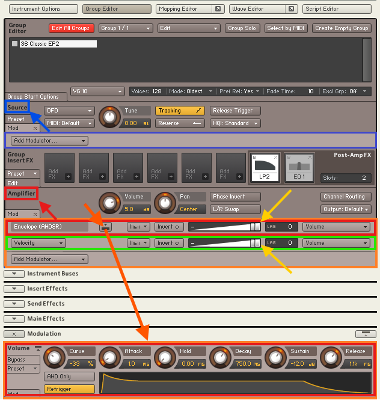
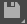

Zerando Samples e outros...
Após importar o sample com problema, você poderá notar semelhanças com o exemplo mostrado na imagem abaixo, que servirá como base para o seu sample.
Clique em  e, em seguida,tendo a imagem a baixo como referencia, certifique-se que somente "Group Editor", que está em cima do lado direito de "Instrument Options" circulado de roxo, esteja selecionado. Com um Click em cima, selecione o instrumento que sera zerado, indicado pela seta amarela.Observe Observe que na imagem apontado e circulado em azul claro, voices esta configurado para uma nota apena,caso o seu também esteja assim, click em cima, digite 128. Observe bem, circulado na lateral esquerda, a localização de Group Editor e dentro deste: Source, Group Insert FX, LP2 e Amplifier, conforme ilustrado na figura abaixo, pois é comum errar o local quando não estamos familiarizados com a tela. Click nos 3 "Mod" à esquerda conforme indica as setas Brancas e certifique-se que os 3 estejam maximizados. E em "Edit" indicado pela seta verde mantenha Minimizado
e, em seguida,tendo a imagem a baixo como referencia, certifique-se que somente "Group Editor", que está em cima do lado direito de "Instrument Options" circulado de roxo, esteja selecionado. Com um Click em cima, selecione o instrumento que sera zerado, indicado pela seta amarela.Observe Observe que na imagem apontado e circulado em azul claro, voices esta configurado para uma nota apena,caso o seu também esteja assim, click em cima, digite 128. Observe bem, circulado na lateral esquerda, a localização de Group Editor e dentro deste: Source, Group Insert FX, LP2 e Amplifier, conforme ilustrado na figura abaixo, pois é comum errar o local quando não estamos familiarizados com a tela. Click nos 3 "Mod" à esquerda conforme indica as setas Brancas e certifique-se que os 3 estejam maximizados. E em "Edit" indicado pela seta verde mantenha Minimizado
Observe no retângulo laranja, temos filtros FX que vieram com o sample Importado e que pertencem exclusivamente a este sample selecionado, os que estão com um "b" em vermelho é porque estão em Bypass e vc pode deletar para economizar recursos do seu equipamento, clicando onde aponta a seta azul ou desmarcar e usar. Tudo que esta dentro do "Group Editor" só atua no instrumento selecionado, sendo assim, qualquer mudança feita aqui so diz a respeito do sample selecionado. Já dentro do destaque em retângulo vermelho, temos vários moduladores, normalmente o sistema inicia com 2, um Envelope (ADSR) e um Velocity.

Repare que em cada modulador circulado em verde claro acima, tem um comando, que ao clicar o Kontakt descerá até chegar na tela abaixo, que mostra um bloco de controle referente ao comando escolhido. Cada modulador da figura anterior possui um bloco de controle como este. Quando um modulador é excluído, ele também é automaticamente removido aqui.

Observe que temos mais moduladores do que antes de importar o sample, mas estes podem estar endereçados ao instrumento de onde exportamos o sample, e não teremos endereçamento para esses moduladores.
Rolando a tela de volta para os moduladores no Kontakt e clicando com o botão direito do mouse no espaço vazio, indicado pelas setas brancas abaixo, aparecerá a opção "Delete". Agora podemos deletar todos os moduladores.

Após deletar os moduladores escolhidos, bem como os filtros e efeitos que restaram e Corrigido "Voice" de 1 para 128, teremos uma tela como a mostrada abaixo, Possivelmente com outros instrumentos, lembre-se: O instrumento selecionado em "G"roup Editor" é que sera mostrado na sua tela. Agora, não há moduladores, conforme destacado em azul e laranja, e os filtros/efeitos remanescentes estão contornados em verde.

Precisamos adicionar um modulador Envelope (ADSR) e um Velocity. Para isso, vá até "Amplifier" (cuidado para não errar o local, indicado em laranja na figura acima), clique em "Add Modulator" > "External Sources" > "Velocity", conforme ilustrado na figura abaixo.

Agora, clique novamente em "Amplifier" (atenção) e selecione "Add Modulator" > "Envelopes" > "AHDSR", conforme ilustrado na figura abaixo.

Se tudo correr bem, você terá o resultado mostrado abaixo, com um modulador Envelope (ADSR) e um Velocity.
Sample e salve ao final clicando em  e seleciona a opção Patch Only.

Aqui está um resumo sobre as três principais opções de salvamento no Kontakt:
Patch Only: Salva apenas as configurações do instrumento (parâmetros, efeitos, scripts), sem incluir os samples. Ideal quando os samples já estão no disco e você não precisa movê-los.
Patch + Samples: Salva as configurações do instrumento junto com os samples. É útil para transferir o instrumento completo, incluindo seus arquivos de áudio.
Monolith: Combina o patch e os samples em um único arquivo, facilitando o compartilhamento ou armazenamento, já que tudo fica integrado em um só lugar.
Dicas Importantes